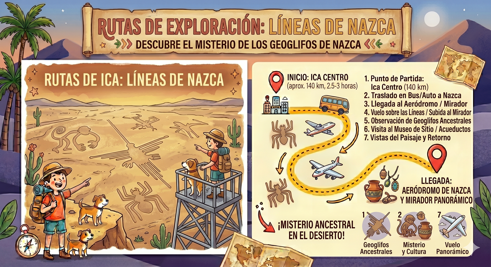

Misterio en el Desierto
Descubre el mayor enigma de la arqueología desde el cielo. Por regulaciones aeronáuticas, es obligatorio llevar Pasaporte o DNI original. Te recomendamos un desayuno ligero.
-
08:00 AM
Traslado Terrestre desde Ica
Nos encontraremos en la oficina principal de Turismo Ica para abordar nuestra minivan turística. Iniciaremos el viaje por la Panamericana Sur rumbo a la ciudad de Nazca.
-
10:30 AM
Llegada al Aeródromo María Reiche
Realizaremos el check-in, pago de impuestos aeroportuarios y el pesaje obligatorio. Proyectaremos un video informativo sobre las líneas mientras esperamos el turno de vuelo.
-
11:15 AM
Inicio del Sobrevuelo Clásico
Abordaremos las avionetas Cessna. El vuelo dura aproximadamente 35 minutos, donde el piloto sobrevolará las 13 figuras más importantes como el Colibrí, el Mono y el Astronauta.
-
11:50 AM
Aterrizaje y Entrega de Certificados
Aterrizaremos de regreso en el aeródromo. Se te entregará un certificado de vuelo personalizado que acredita tu paso por este Patrimonio de la Humanidad.
-
12:30 PM
Almuerzo en la ciudad (Opcional)
Nos trasladaremos al centro de Nazca, donde tendrás tiempo libre para disfrutar de la gastronomía local antes de emprender el viaje de regreso.
-
04:00 PM
Retorno a Ica
Llegaremos nuevamente a nuestro punto de partida en Ica, dando por concluido nuestro servicio. ¡Te llevarás recuerdos inolvidables!
Vista de la Ruta de Vuelo
